Financiamento coletivo
Como muitas pessoas, cada uma com um pouco, tiram ideias do papel, ajudam em tragédias e mudam vidas.
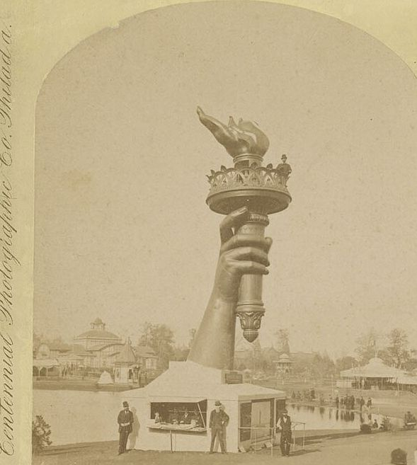
O que é
Em vez de pedir dinheiro a um banco ou a um grande investidor, o criador apresenta o projeto na internet e recebe pequenos apoios de centenas ou milhares de pessoas. A plataforma recebe os pagamentos, cobra uma taxa e repassa o valor.
O primeiro grande caso · 1885
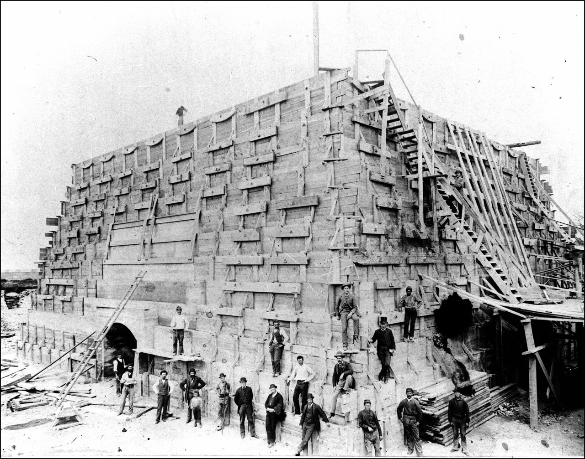
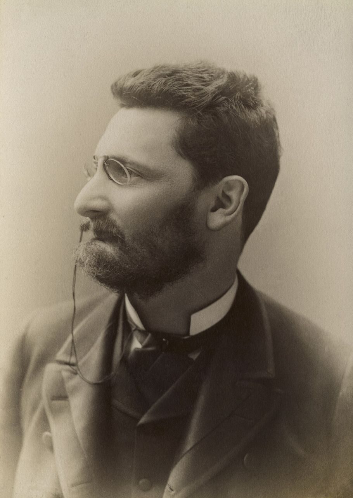
A era da internet
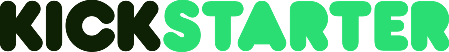
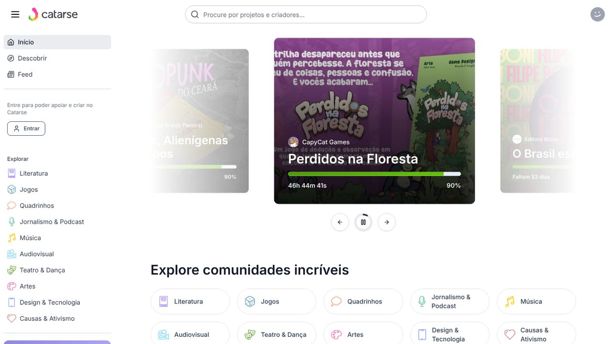
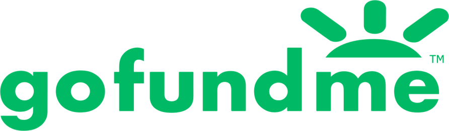
Casos reais
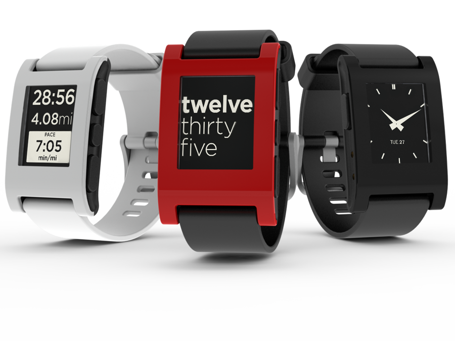
Pediu US$ 100 mil e recebeu 100 vezes mais, de 68.929 apoiadores. Em 2015, o Pebble Time passou de US$ 20 mi.
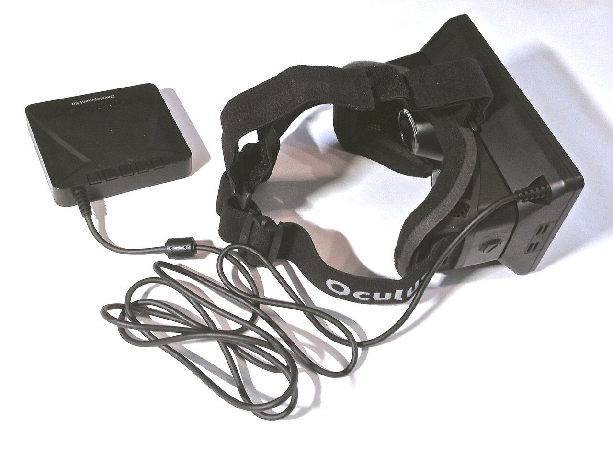
Meta de US$ 250 mil. Dois anos depois, a empresa foi comprada pelo Facebook por cerca de US$ 2 bilhões.
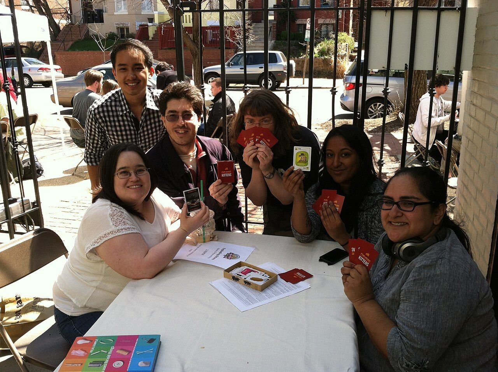
apoiadores, o projeto com mais apoiadores do Kickstarter na época, com US$ 8,78 mi.
Tópico 1
Como o dinheiro funciona
O criador só recebe se bater a meta. Se não bater, o dinheiro volta para os apoiadores.
Modelo do KickstarterO criador fica com o valor arrecadado, mesmo abaixo da meta.
Comum em vaquinhas de doaçãoTópico 2 · Impacto social
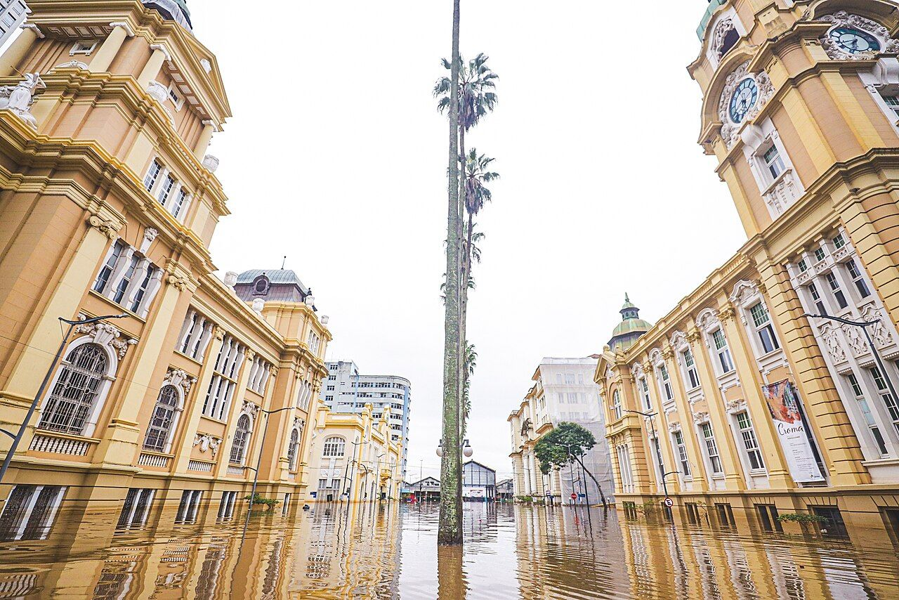
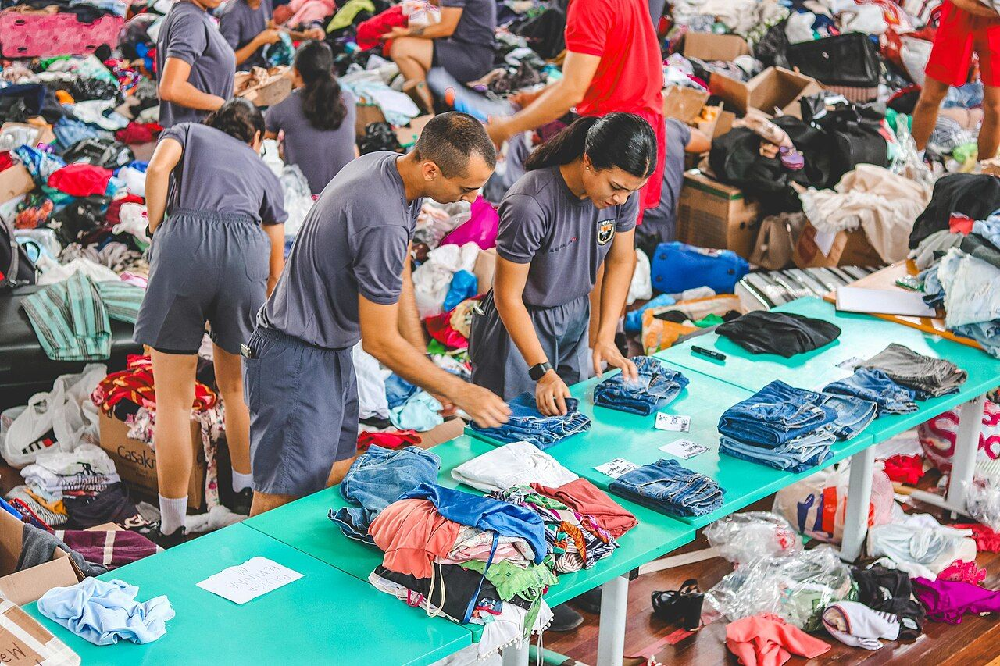
Impacto social
Em 2020, no Distrito Federal, uma mãe reuniu quase R$ 11 milhões em doações e campanhas virtuais para comprar o remédio contra a atrofia muscular espinhal da filha.
Outras famílias fizeram o mesmo, combinando vaquinhas online com rifas e bazares.
Quadrinhos, livros, jogos, música e podcasts que grandes empresas não bancariam saem do papel com o apoio dos fãs.
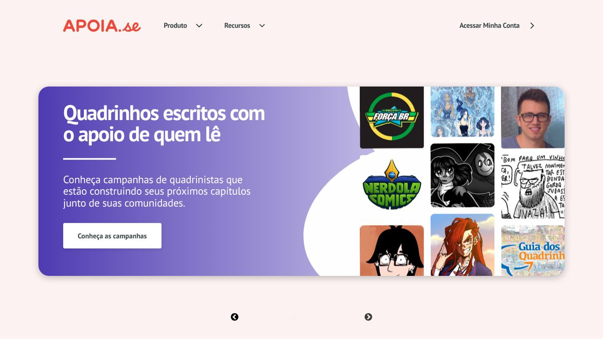
Pequenos negócios testam produtos antes de fabricar. O Oculus começou no Kickstarter e virou uma empresa de US$ 2 bilhões.
Tópico 3 · Plataformas de arrecadação
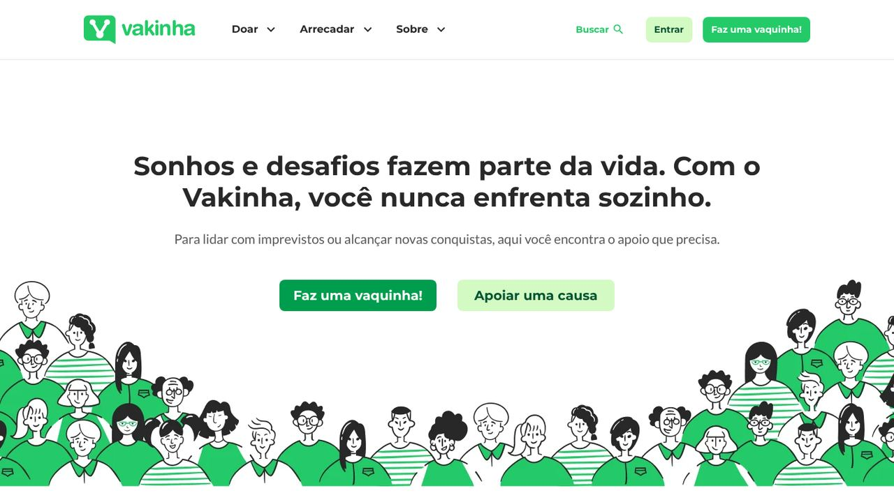
Causas pessoais, saúde e emergências. Taxa: 6,4% + R$ 0,50 por doação.
Livros, quadrinhos, jogos, música e audiovisual. Desde 2011.
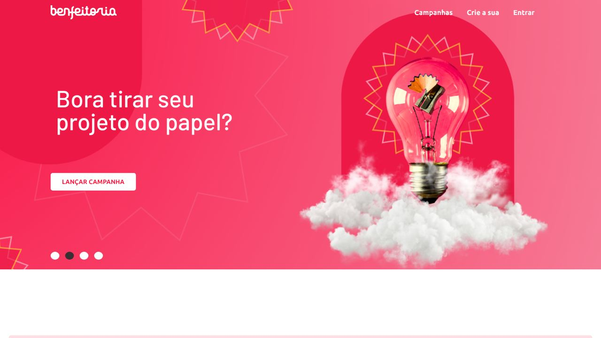
Projetos sociais, culturais e de impacto na comunidade.
Apoio mensal a criadores de conteúdo, artistas e podcasts.
Tópico 3 · Plataformas de arrecadação
A mais famosa para produtos e projetos criativos. Mais de US$ 8 bilhões em apoios.
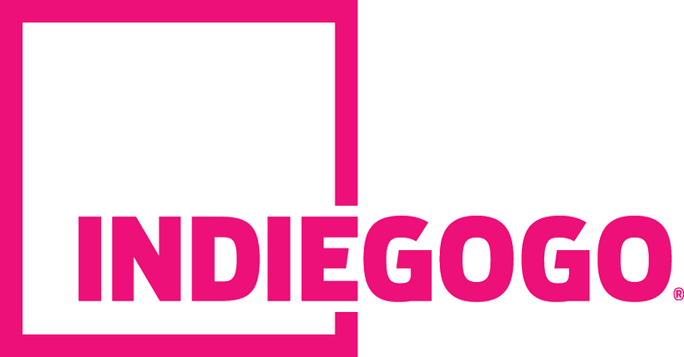
Forte em tecnologia e inovação. Aceita meta flexível.
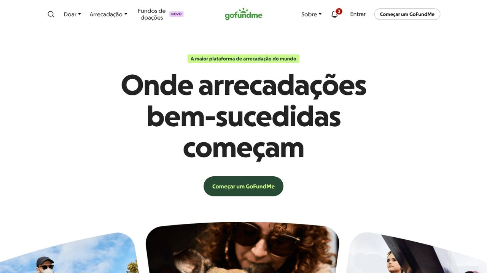
A maior de doações: cerca de US$ 30 bilhões e 150 milhões de pessoas.
Na balança
A caixa térmica com liquidificador arrecadou mais de US$ 13 milhões no Kickstarter em 2014. Cerca de 20 mil apoiadores nunca receberam o produto, e o caso foi parar no Ministério da Justiça do Oregon (EUA).
Como apoiar com segurança
Resumo
Conclusão
= um projeto que sai do papel. Funciona quando quem cria planeja e presta contas, e quem apoia confere antes de doar.
Obrigado!
Fontes
Financiamento coletivo
O poder de muitos
O que é
Uma ideia antiga · 1885
A era da internet
Casos famosos
Meta de US$ 100 mil · 68.929 apoiadores
Comprado pelo Facebook por ~US$ 2 bi em 2014
apoiadores, recorde do Kickstarter
Tópico 1 · Passo a passo
Tópico 1 · Passo a passo
Como o dinheiro funciona
Tópico 2 · Impacto social · RS 2024
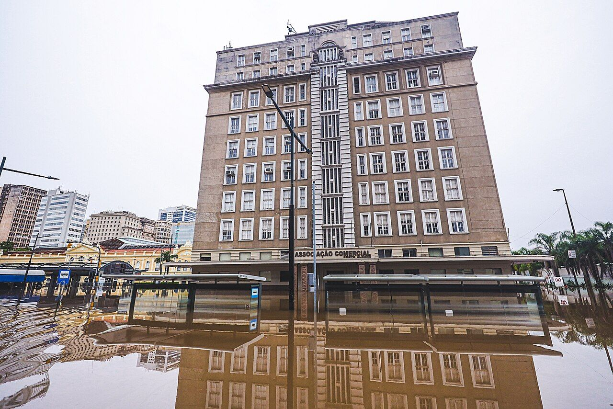
Impacto social
reunidos em doações e campanhas virtuais para comprar o remédio contra a atrofia muscular espinhal de uma criança.
movimentados pelo GoFundMe até 2024, com 150 milhões de pessoas doando ou recebendo.
Tópico 3 · Plataformas de arrecadação
Riscos e segurança
arrecadados no Kickstarter. Cerca de 20 mil apoiadores nunca receberam o produto.
= um projeto que sai do papel.
Planejamento de quem cria · cuidado de quem apoia
Números e taxas conferidos em outubro de 2026. Valores de plataformas mudam com frequência.